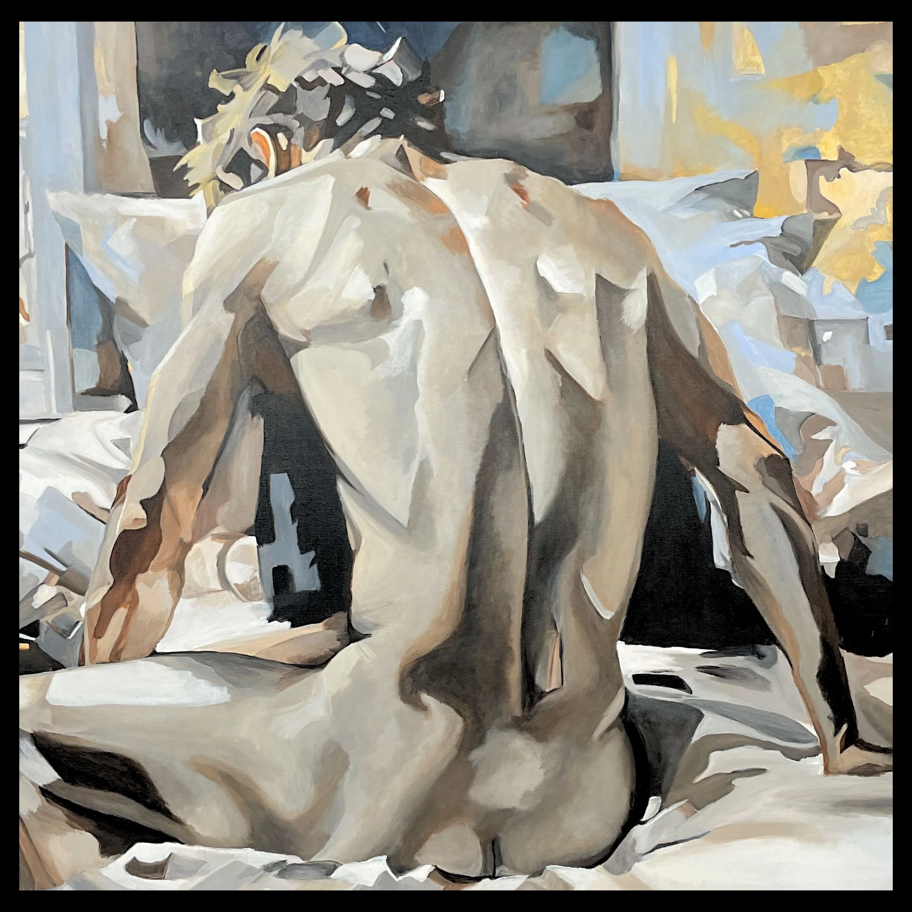
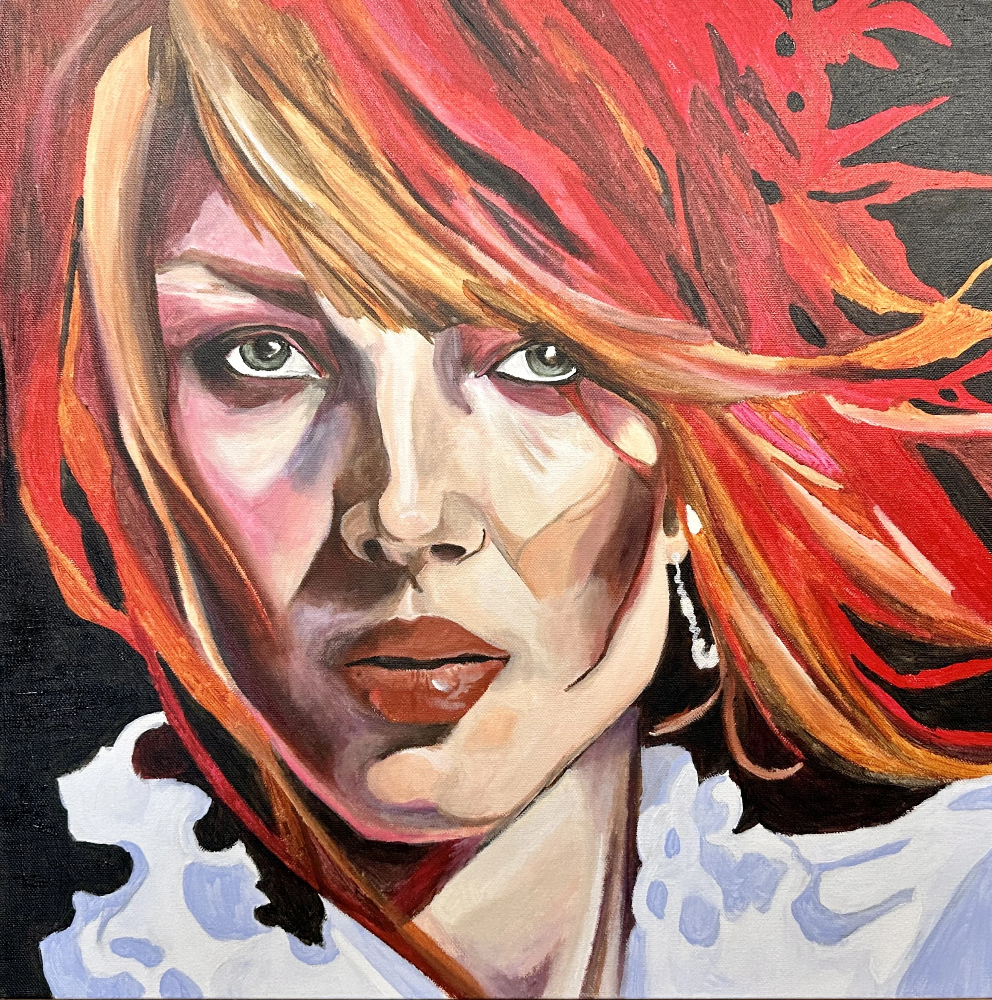
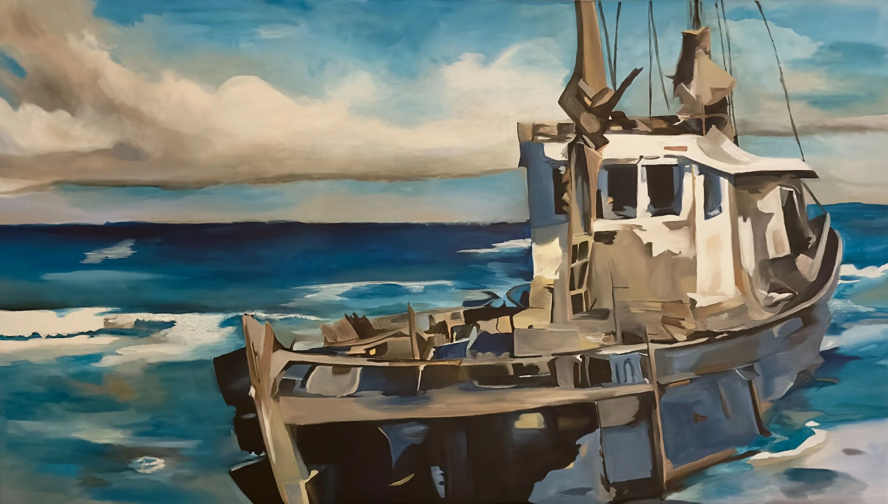
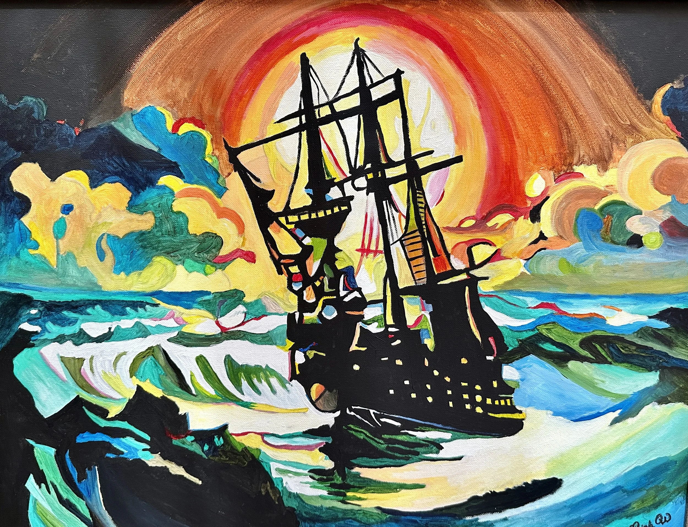
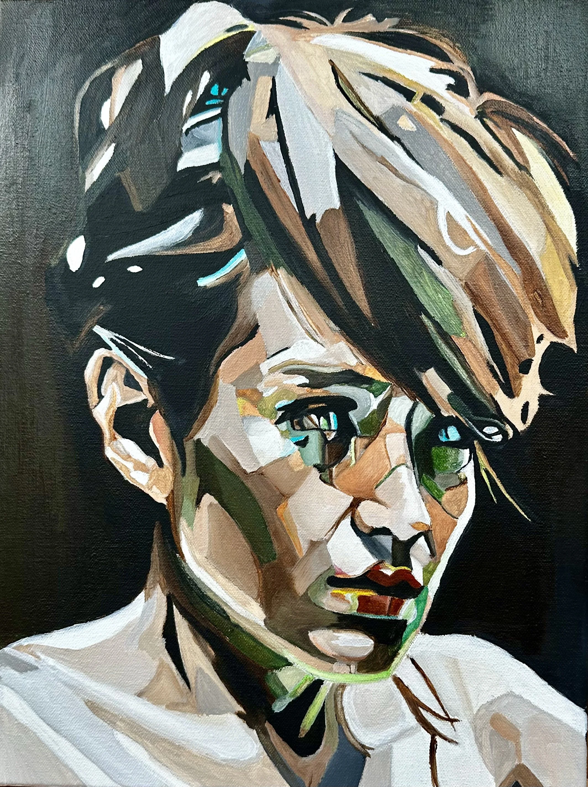

Imagine a piece of art that captures not just a moment, but the essence of your journey—your dreams, your struggles, your triumphs. By commissioning a unique work from me, you’re inviting me into your world, where together we can weave your story into a visual tapestry. Let’s create something that resonates with your heart, a piece that you can cherish and share for years to come, reflecting your soul’s true colors.
I recently purchased this stunning painting, and I couldn’t be more thrilled with my choice. This artwork has become a focal point in my home, sparking conversation and inspiring awe among guests. It’s not just a piece of art; it feels like a reflection of wild spirit and nature’s beauty. I highly recommend it to anyone looking to bring a touch of vibrancy and grace into their space!

Hidden Wounds
HIDDEN WOUNDS
I am absolutely thrilled to share that I won this magnificent painting at a recent private charity auction! The moment I laid eyes on it, I felt an undeniable connection to the piece. The artist’s ability to capture the nuances of the human form, combined with the thoughtful use of light and shadow, creates a powerful narrative of vulnerability and introspection. It’s not just a depiction of the human body; it evokes a sense of emotion and contemplation that resonates deeply. This artwork has found a special place in my home, and I can’t help but admire it daily.
The Lover’s Kiss
THE LOVER’S KISS
I had the privilege of adding The Lover’s Kiss by Leigh Witherell to my collection, and it has quickly become the centerpiece of my home. The piece is absolutely stunning capturing the intimate, timeless feeling of looking out into a moment shared between two lovers along the Mediterranean. What makes it even more special is the way it’s displayed. The unique hanging that Leigh’s work specialises draws your eye from the side first, creating a sense of discovery before you’re met with the full beauty from the front. It’s truly unlike anything else I own. Every guest who visits comments on it, it’s the artwork that gets the most attention and admiration in my condo. Leigh has an excellent ability to create something both personal and universal, full of movement and soul. I feel fortunate to have found her at this stage of her career, and I’m excited to watch her continue to grow and collaborate with other artists.

Sara
SARA
My kids and I were seriously unprepared for the effect that painting has on you in person! I get why people were spellbound! Leigh the portrait is compelling and stunning! I cannot adequately express how much your gift means to us.

The Wreck
THE WRECK
The water and boats are Joe’s favorites things. It looks amazing on the wall near the front door. Every time someone walks into the house they stop and stare at the painting. They couldn’t believe what an incredible painter you are.

The Pirate Ship
THE PIRATE SHIP
The Pirate Ship was gifted to a dear family member.

Kat
KAT
“Kat” is a commissioned piece done in remembrance of a daughter gone too soon.
BEGIN A CONVERSATION
Your vision, on canvas.
Tell Leigh what you have in mind. You don’t need to have every detail figured out—every commission starts with a conversation.